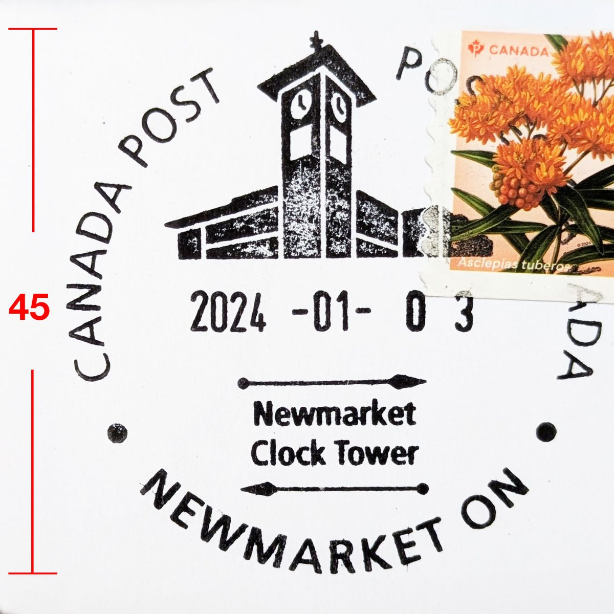

Newmarket STN Main pictorial cancel
Newmarket Clock Tower
- Status
- Active
- Run dates
- 2022-01-01 to present
- Design
- "Newmarket Clock Tower"; clock tower
- Ink colour
- Black
- Designer
- Unknown
- Post office
- Newmarket STN Main
120 Mulock Drive, Unit #3
Newmarket, ON
L3Y 3N0 - Subjects
- architecture, building, clock tower
Collect it by mail. Send your stamped covers, with a stamped return envelope, to the post office address above. How to collect pictorial cancels by mail · en français
 Major Mackenzie POOBSERVATOIRE DAVID DUNLAP OBSERVATORY
Major Mackenzie POOBSERVATOIRE DAVID DUNLAP OBSERVATORY Beeton PO2014
Beeton PO2014 Toronto Station KVersion 1
Toronto Station KVersion 1